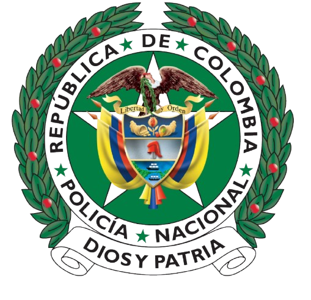

POLICÍA NACIONAL
DE COLOMBIA
Inicio
Transparencia y Acceso a la Información Pública
Atención y Servicio a la ciudadania
PQR2S
Canales de Atención
Solicitudes y Consultas
Trámites y Servicios
Oferta Insitucional
Participa
Nuestra Institución
Quiénes somos
Línea de mando, Directores y Comandantes
Directorio
Museo Histórico
Revista Policía Nacional
Noticias
Unidades
Dirección General de la Policia Nacional de Colombia
Jefatura Nacional de Desarrollo Humano
Jefatura Nacional del Servicio de Policia
Jefatura Nacional de Administración de Recursos
Regiones, Departamentos y Metropolitanas
Miembros de la Institución, Pensionados y Familia
Personal Activo
Pensionados
Familias
Asociación y obras sociales
Oficiales profesionales de la reserva
inicio
>
Participa
Participa
1
Participe en la racionalización de trámites
2
Formulación de propuestas o preguntas para la audiencia de rendición de cuentas institucional
3
Participe en la formulación de los planes de acción de la institución
4
Participe en la audiencia pública de rendición de cuentas
5
Participe la formulación de la estrategia de rendición de cuentas institucional
6
Mecanismos de participación en la formulación de políticas
7
Reporte información para la paz